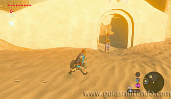
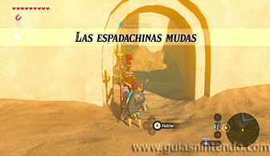
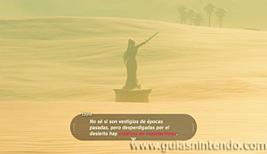
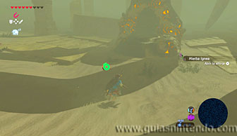
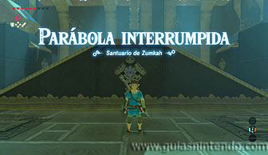
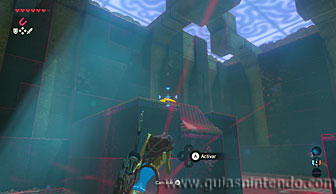
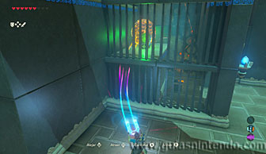
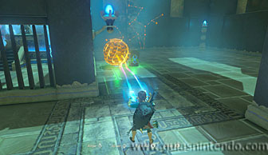
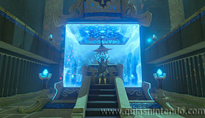

Puedes entrar en este santuario desde que llegas a la región de la torre del cañón, pero tendrás que completar primero una Prueba heroica (Las espadachinas mudas) para que la entrada aparezca. La prueba la puedes activar hablando con la guardia que vigila la entrada del lado noroeste de la Ciudadela Gerudo.

Te hablará de unas estatuas que están repartidas por el noroeste de la ciudadela e indican con sus espadas el lugar donde se encuentra el santuario. Debes viajar por el desierto en esa dirección (es aconsejable hacerlo en morsa) y entrar en la gran tormenta de arena que hay en esa zona. Perderás la visión en el mapa, pero si mantienes el rumbo irás encontrando las estatuas que te indican hacia donde debes ir. Si lo haces bien llegarás a la entrada del santuario. Si haces el mismo camino sin haber activado la prueba heroica, también lo podrás encontrar.

Una vez dentro sube en las rampas que hay delante de ti y usa el módulo imán para atrapar la esfera que va saltando de un resorte a otro.

Después llévala tras la reja que hay en el lado izquierdo (no la central que es donde está el altar). Se abrirá la puerta de esa celda y podrás encontrar un cofre que contiene una cimitarra de la luna.

Después lleva la esfera junto al otro interruptor que hay al lado de la celda central, así se abrirá la puerta hacia el altar. Ahora lo único que te queda es entrar en el santuario y dirigirte al altar para conseguir el símbolo de valía correspondiente.
